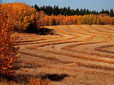

|
|
|
|
|
|
Agriculture History |

|
|
|
|
|
Food and Agriculture Activities The following activities are designed for you to explore the world of food, processing and the agriculture industry. Try some or try all of the tasks. These are ideas that are taken from the Agriculture Saskatchewan series by Saskatchewan Education. |
Activity 1: Consumer Testing
Consumer testing has become an important part of our society. You can become a consumer tester by testing the quality standards of several loaves of bread. (You may wish to test other food items such as processed meats, different brands of yoghurt, packaged apple juice or whatever. Use the bread outline as a guide).
If you are in a class, divide into
groups of three or four. Each group should test several brands of
one type of bread (e.g. white, whole wheat, rye). If possible,
include a loaf of homebaked bread.
Devise guidelines for testing a variety of characteristics in
the bread such as:
- outward appearance,
- volume,
- interior quality,
- taste quality,
- other items you may wish to test or evaluate such as cost, packaging or advertising.
Develop data sheets to record the test results...or use the data sheet provided as a guideline.
Rank the loaves of bread and summarize the information on a large
sheet of paper for class viewing.
Sample Bread Quality Score Sheets
Test for Outward Appearance
| Loaf Number | Shape | Colour | Character of Crust | Total |
Perfect score: 10 points in each area of testing
Standards:
Shape:
- Count in 5 slices from each end of the loaf. Compare the slices. If slices do not match, subtract 5 points.
- If the loaf appears caved in, subtract 5 points.
Colour:
- Hold a slice up to a light source.
- If colour is not uniform throughout the slice, subtract 5 points.
- If the crust is burned, subtract 5 points.
Character of crust:
- Examine crust for crushed appearance.
- If the crust is difficult to tear, subtract 5 points.
- If the crust is crushed, subtract 5 points.
Test for Volume
| Loaf Number | Declared Weight | Declared Height | Moisture Content |
| Loaf Number | Weight Variance | Height Variance | Total |
Perfect score: 10 points in each area of testing
Standards:
Weight variance:
- Actual weight must be within 7 grams of declared weight.
- Subtract 3 points for every 7 grams outside the declared weight.
Height variance:
- Actual height must be within 1.25 centimetres of specified height.
- Subtract 3 points for every 0.5 centimetres outside the specified height. Measure from the highest point of the loaf.
Moisture content:
- Actual moisture content must be within 1% of declared moisture content (37%).
- Weigh loaf to nearest 0.1 gram (value A below).
- Cut the loaf into 23 millimetre slices. Place them on paper and allow them to dry overnight so that the bread becomes brittle.
- Reweigh the loaf to the nearest 0.1 gram (value B below).
- Calculate the percent moisture: A B x 100 = % A
Test for Interior Quality
| Loaf Number | Grain | Texture | Aroma | Total |
Perfect score: Grain:
Standards:
Grain: 10 points
Texture: 10 points
Aroma: 5 points
- Hold a slice up to a light source.
- If holes extend through the slice, subtract 5 points.
- If there are very large holes in the loaf, subtract 5 points.
Texture:
- Hold a slice up to the tip of your nose. Move it around.
- If it feels rough, not like crushed velvet, subtract 5 points.
Aroma:
- Hold a slice of bread to your nose and breathe deeply.
Colour:
- Hold a slice up to a light source.
- If the colour is not uniform throughout the slice, subtract 5 points.
- If the crust is burned, subtract 5 points.
Character of Crust:
- Examine crust for crushed appearance.
- If the crust is crushed, subtract 5 points.
- If the crust is difficult to tear, subtract 5 points.
Test for Taste Quality
| Loaf Number | Crust | Grain | Total |
Perfect score:
Crust: 10 points
Grain: 5 points
Standards:
Crust:
- Taste a sample of the crust.
- If the crust tastes rancid or burned, subtract 5 points.
- If the crust is difficult to chew, subtract 5 points.
Grain:
- Taste a sample.
- If it tastes flat, subtract 5 points.
Total Score
| Loaf Number | Total Score | Evaluation |
Evaluation of Score
- 95-100 Excellent
- 85-95 Very good
- 70-85 Good
- 50-70 Fair
- 0-50 Poor
Activity 2: Marketing Strategies
Working in groups of three or four, develop
a strategy for marketing a new product. Each group should imagine
it is a producer who has developed a new agricultural product.
Two examples of these are broccoflower and applepear. You may want to think of a new product on your own. Each group
should be responsible for the following:
Describe the item by naming it and producing a representation of it on paper or through a three-dimensional representation (a model).
Decide how the product would be used by consumers and how it would be processed so that it could be used.
- Describe the packaging.
- Describe the market for the product (who, where) and the transportation plans.
- Formulate a marketing plan.
- Determine how many people in the class would try it.
One last thing you may wish to try...to produce the item. For example, you may decide that you will market the new product "Peanut/Cheese Chews". Make some for everyone to sample!
Activity 3: The Changing AgriFood Industry
Work in small groups of three or four to
brainstorm changes to the agrifood industry that have been made
because of consumer demand. One member of each group should report
back to the large group and record the suggestions. Possible suggestions
follow.
- Pork producers may raise some pigs for the pork chop market, others for the bacon market and others for the ham market.
- Beef is now 20% leaner than it was 15 years ago.
- New varieties of saskatoon berries have been developed that are larger and can be grown domestically.
- There is an increase in organic farming and the wild rice and aquaculture industries.
- There is an increase in crop diversification. Producers are growing field peas, potatoes, native berries, mushrooms and honey.
- Smaller meat carcasses and cuts of meat are required because of changes in family size and attitudes about diet.
Think about what meals were like, what they
are like today and what a meal may be like in the future. Then consider the following questions...
- Why have changes occurred?
- What forces ensure that changes will continue to occur?
- Are these changes positive or negative?
- Which people and organizations would agree with your opinion and which would disagree?
- What will the effects be on the agriculture industry?
Activity 4: The Cost of Food
Work individually to compute the difference
in price between a loaf of bread and the pile of flour that is
needed to make it. This activity connects the value added concept
to actual money value. Estimate the amount of
money you think the producer would receive from the price of
a loaf of bread. Then, compute the actual value using
current prices. These are average figures within the last ten years in Saskatchewan.
- 1 bu. wheat makes about 19.5 kg flour (43 lb.)
- 1 bu. wheat weighs approximately 27 kg (60 lb.)
- 0.45 kg (16 oz.) flour makes 1.57 0.45 kg (16 oz.) loaves of bread
- The average price of a loaf of bread is $1.09.
- In January, 1991 the price of 1 bu. of No. 1 Canadian Western Red Spring Wheat with 13.5% protein content was $3.18 at Saskatoon, Saskatchewan.
- How many loaves of bread can be made from 1 bu. of wheat? (1 bu. wheat makes approximately 68 loaves of 0.45 kg loaves of bread)
- What is the money value of the wheat in one loaf of bread? (approximately 4.7 cents)
A similar activity can be done using a litre of milk.
The farmer's share varies with the price of wheat.
Activity 5: The Value Added Concept
In order to illustrate the concept of value added, in front of a group (your class), place
about 350 grams of wheat on a table beside an unwrapped, 450
gram loaf of bread. It takes about 350 grams of wheat to make
one loaf of bread. Offer to sell each item to the highest bidder.
Probably, the bread will invoke more interest than the pile of
wheat. Consider the following questions:
- Why will you give me more money for the bread than for the wheat?
- If this loaf of bread contains this amount of wheat, what is the difference?
- Why does society (your class) value the bread more than the wheat? (Use the term value added.).
- What has been added to the bread to make it more valuable?
- If the bread were not available, what would happen?
- If this loaf of bread were sliced and wrapped, what would happen to the price? Why?
- What happens to the price if organically grown wheat is used?
Brainstorm a list of items that have value added and are
worth more to society than the original products used to create
them (e.g. blue jeans pizza, recorded cassette tapes). Determine
which items are agriculture related.
The concept of value added can be further investigated
by tracing a particular product and its cost
back to the original product and its cost. Potato chips are an
excellent example. Think of the cost of a bag of
potato chips (from $.75 to over $2.00; depending on the size of the bag -- and type). Estimate the cost of the original
product and then trace the processing back to the original
potato. How many times has the price of the potato been increased?
There are many facts that you may discover.
- Special potatoes high in starch and low in sugar are needed to make potato chips.
- Nutrients are lost because the potato is exposed to light and air during processing.
- Water jets and caustic soda are used to remove the skins of the potatoes.
- Vegetable oil is used to fry the potatoes after they are thinly sliced.
- The potato slices increase their weight by 30 times, during frying by absorbing oil.
- Artificial additives such as colour enhancers and artificial flavours are added to the chips.
- The packaging for potato chips is often made from plastics that are nonbiodegradable.
Activity 6: You are what you eat....
Record everything you eat in a day. Complete several concept webs using the foods you ate as the end concept. This will require reading of labels, classifying into food groups, researching the origin of the food and discovering about food additives and food enrichment during processing.
How much of the food that you consumed was NOT chemicals? How long do the chemicals used in processing that remain in the food, stay in your body? What do people who have chemical sensitivities buy their food? At what cost?
Activity 7: Using Beef Cattle - All of Them
All parts of beef cattle are useful for some purpose. Over
one hundred pharmaceuticals that humans use today come from beef. Make use of a resource centre to find out about the following:
- insulin,
- corticotropin,
- heparin,
- thrombin,
- epinephrine,
- parathyroid hormone,
- rennet,
- thyrotropin (TSH).
Some of the facts you
may discover follow.
Insulin
- from the pancreas
- used by diabetics
- pancreas of 26 animals needed to supply one diabetic with enough insulin for one year
- majority bioengineered today
Corticotropin
- from the pituitary gland
- used to treat allergies, anemia, respiratory diseases, leukemia
Heparin
- from the lungs
- used to prevent blood coagulation during operations and to treat frostbite and burns
Thrombin
- from the blood
- used to promote blood coagulation
Epinephrine
- from the adrenal glands
- used to relieve the symptoms of hay fever, asthma and other forms of mild allergies
- majority used today synthetic (norepinephrine)
Parathyroid hormone
- from the thyroid
- used to treat thyroid deficiency
Rennet
- from the stomach
- used to help infants digest milk
- thyrotropin (TSH)
- from the thyroid
- used to stimulate the thyroid gland
|
|
|